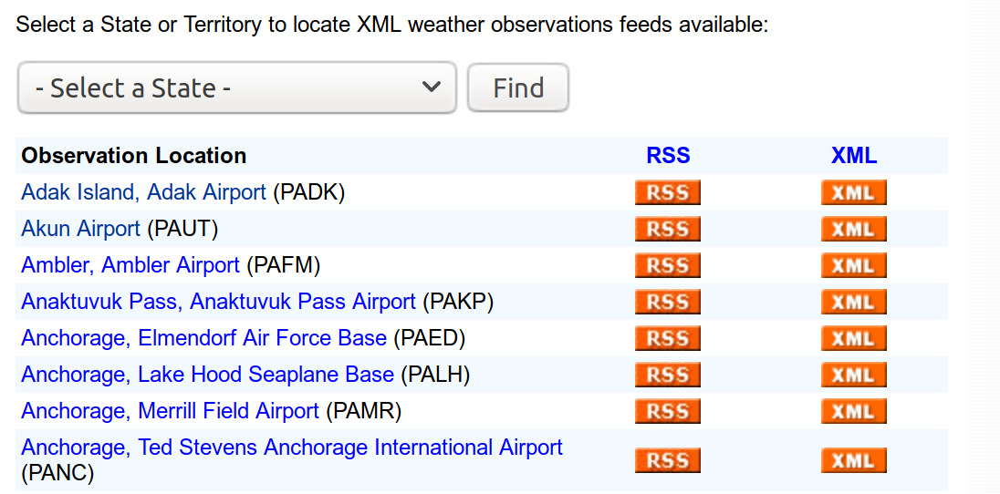
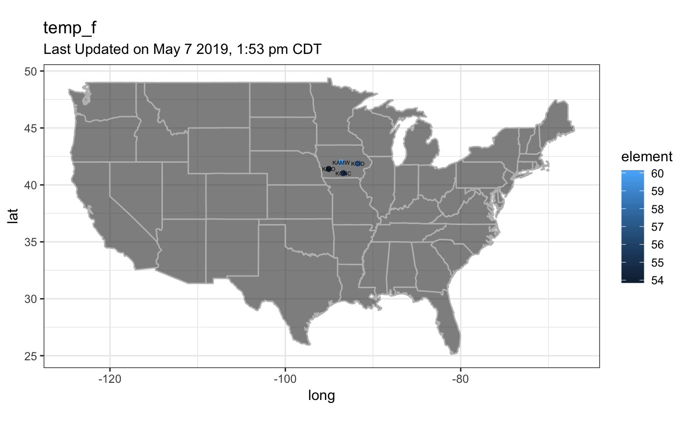

Introduction
The National Weather Service site https://w1.weather.gov/xml/current_obs/ provides access to observed current weather conditions for about 2,367 locations across 58 US States and Territories.

With the XML link for an airport code (e.g. KAMW), users can acess current weather report for the airport location. Different kinds of weather associated data is shown on the webpage. For instance, the page displays

Actully, the XML file contains more than 20 different types of weather data, as well as the location and time information of the observations. Further more, a link to “2 Day History” gives accesse of an HTML page contianing weather history data for past 72 hours.

Thanks to the well orgnized weather data structure from National Weather Service website, the user can easily explore both the spatial and temporal aspect of weather of selected locations. The site also provide the Zip files containing all XML files of current and updated hourly. However, people may be only interested in some selected sites, and do not borther to download big whole data. Also, the XML and HTML formats need to be converted to dataframes before downstream analysis. Web scraping is a nature idea to handel this. The package airportweather is designed as an efficient tool to scrape, extract, integrate and visualize the weather data of airport locations. The advantage of the package is it scrapes real time data from web when calling functions in the package, so the most up-to-date data is obtained.
Package data preparation
The primer key of the weather data is 4 characer CODE of airport locations. Scraping from the root page https://w1.weather.gov/xml/current_obs/ , we have collected all current airport code together with the name of location and the state/territory abbreviations correspond to the code. The data set all_code.rda contains 2,367 US airport codes from 58 state/territory. This data is used as the package example data to prvide currently valid codes of US airports. However, if new codes are added in the National Weather Service site, the airportweather package will still work as long as the format of webpage and stucture of the site keeps the same.
| State | Code | Name |
|---|---|---|
| ak | PADK | Adak Island, Adak Airport |
| ak | PAUT | Akun Airport |
| ak | PAFM | Ambler, Ambler Airport |
| ak | PAKP | Anaktuvuk Pass, Anaktuvuk Pass Airport |
| ak | PAED | Anchorage, Elmendorf Air Force Base |
| ak | PALH | Anchorage, Lake Hood Seaplane Base |
Functions
current_weather(id,type)
The current_weather function is the basic function for data retrieving. It reads the weather information of an airport from XML file on National Weather Service website (e.g., https://w1.weather.gov/xml/current_obs/KAMW.xml), and output a single row dataframe of location, station_id, latitude, longitude, observation_time, and selceted types of the weather elements.
Description of input parameters are as follows:
| Parameter | Description | Type |
|---|---|---|
| id | one 4-letter airport code | chr |
| type | a vector of weather elements | chr vector |
The possibe types of elements the function can deal with are
- weather
- temp_f
- wind_mph
- wind_dir
- relative_humidity
- pressure_in
- visibility_mi
- dewpoint_f
| location | station_id | latitude | longitude | observation_time | wind_mph | temp_f |
|---|---|---|---|---|---|---|
| Ames, Ames Municipal Airport, IA | KAMW | 41.99056 | -93.61889 | Last Updated on Apr 27 2019, 4:53 am CDT | 10.4 | 45.0 |
current_weather_more(id_vector, type)
The current_weather_more function calls the current_weather function to retriving weather elements for multiple airports, and output integrated dataframe for multiple airports.
| Parameter | Description | Type |
|---|---|---|
| id | one 4-letter airport code | chr vector |
| type | a vector of weather elements | chr vector |
current_weather_more(c("KAMW", "KAIO", "KCID", "KCNC"), c("wind_mph", "temp_f", "relative_humidity"))| location | station_id | latitude | longitude | observation_time | wind_mph | temp_f | relative_humidity |
|---|---|---|---|---|---|---|---|
| Ames, Ames Municipal Airport, IA | KAMW | 41.99056 | -93.61889 | Last Updated on Apr 27 2019, 4:53 am CDT | 10.4 | 45.0 | 83 |
| Atlantic, IA | KAIO | 41.40000 | -95.05000 | Last Updated on Apr 27 2019, 5:55 am CDT | 16.1 | 46.0 | 93 |
| Cedar Rapids Airport, IA | KCID | 41.88295 | -91.72456 | Last Updated on Apr 27 2019, 5:52 am CDT | 9.2 | 44.0 | 93 |
| Chariton, IA | KCNC | 41.03333 | -93.36667 | Last Updated on Apr 27 2019, 5:55 am CDT | 20.7 | 46.0 | 82 |
plot_position()
Theplot_position function plot one weather component of the airports chosen by user and the user’s position on the map of US.
Description of input parameters are as follows:
| Parameter | Description | Type |
|---|---|---|
| id_vector | a vector of multiple airport codes | chr vector |
| type | a weather elements | chr |
| you.long | user provided longitude | num |
| you.lat | user provided latitude | num |
| number | number= true: this element is numeric | logical |
plot_weather()
Theplot_weather function plot one weather component of several airports on the map of US. The first argument is a vector contains
Description of input parameters are as follows:
| Parameter | Description | Type |
|---|---|---|
| id_vector | a vector of multiple airport codes | chr vector |
| type | a weather element | chr |
| label | lable= TRUE: label airport code on the plot | logical |
| number | number= TRUE: this element is numeric | logica |
The component can be factorial type, such as “weather”,

or numerical/continuous type, sush as “temp_f”
plot_weather_us()
The plot_weather_us function plot one component of all airports and the user-provided position on the map of US with contour lines. The component has to be continues, such as “temp_c”.
Description of input parameters are as follows:
| Parameter | Description | Type |
|---|---|---|
| type | a weather elements | chr |
| you.long | user provided longitude | num |
| you.lat | user provided latitude | num |
| bin | the binwidth of the contour lines | num |
It takes relaively long time to run this function. Below is a previous result as a demonstration.

obhistory()
Usually, the weather condition (Sunny, Fog, etc..) and air temperature( in degrees Fahrenheit) are two most important elements in weather data. As a tiny tool, obhistory() is able to retirve 3 day history of weather and temperature of one location. This function extract a table from HTML and select weather and air tempereture as the variables of interest. Output is a dataframe of 9 columns.
| code | loc_name | date | time | localtime | time_UTC | Weather | Temperature | hday |
|---|---|---|---|---|---|---|---|---|
| KAMW | Ames, Ames Municipal Airport, IA | 24 | 05:53 | 2019-04-24 05:53:00 | 2019-04-24 00:53:00 | Fair | 37 | first24hours |
| KAMW | Ames, Ames Municipal Airport, IA | 24 | 06:53 | 2019-04-24 06:53:00 | 2019-04-24 01:53:00 | Fair | 38 | first24hours |
| KAMW | Ames, Ames Municipal Airport, IA | 24 | 07:53 | 2019-04-24 07:53:00 | 2019-04-24 02:53:00 | Fair | 44 | first24hours |
| KAMW | Ames, Ames Municipal Airport, IA | 24 | 08:53 | 2019-04-24 08:53:00 | 2019-04-24 03:53:00 | Fair | 50 | first24hours |
| KAMW | Ames, Ames Municipal Airport, IA | 24 | 09:53 | 2019-04-24 09:53:00 | 2019-04-24 04:53:00 | Fair | 57 | first24hours |
| KAMW | Ames, Ames Municipal Airport, IA | 24 | 11:53 | 2019-04-24 11:53:00 | 2019-04-24 06:53:00 | NA | 62 | first24hours |
The description of each variable is as follows:
| Variable | Description | Type |
|---|---|---|
| code | 4 character airport code | chr |
| loc_name | name of the airport location | chr |
| date | the same as in the original html table | chr |
| time | the same as in the original html table | chr |
| localtime | the local time of observations | chr |
| time_UTC | UTC time | POSIXct |
| Weather | the Weather | Factor |
| Temperature | define the 1st, 2nd and 3rd 24 hours | Factor |
Note that the returned dataframe has various number of rows, as the observation frequency is not fixed at each airport site. For instance, KAMW, where the weather data collected every hour will return 72 rows, while KORD, where data updated every 20 minutes, will return 216 rows. Furthermore, at some locations, the obsevation time points are not evenly distributed. So it will be important that the table contains detaied time information. A POSIXct formatted time variable (in UTC) is also generated based on data. If the user need to compare data from different time zones, the UTC time will make things tidier.
plot_temp_history()
It is interesting to explore the time series of air temperature for 3 days until current time. plot_temp_history() can easily generate a ggplot figure.with the airport location name in the title. The plot was grouped and colorred by each 24 hours.
runShiny()
A shiny app was designed to demonstrate selected functions in the airportweather package. The spatial visualization tab, “Weather information on map”, call current_weather_more to show selected weather variables for single or multiple airports on interactive Maps with leaflet, and generate an interated table for multiple locations as well.
The temporal visualization tab, “History weather at one location”, call plot_temp_history to generate a timeseries plot of temperature for past 3 days at one airport location, and call obhistory to generate a table of weather and tempareture history of the past 3 days.